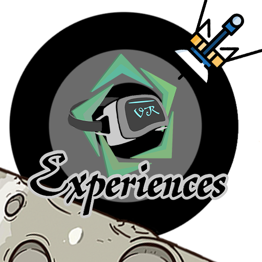
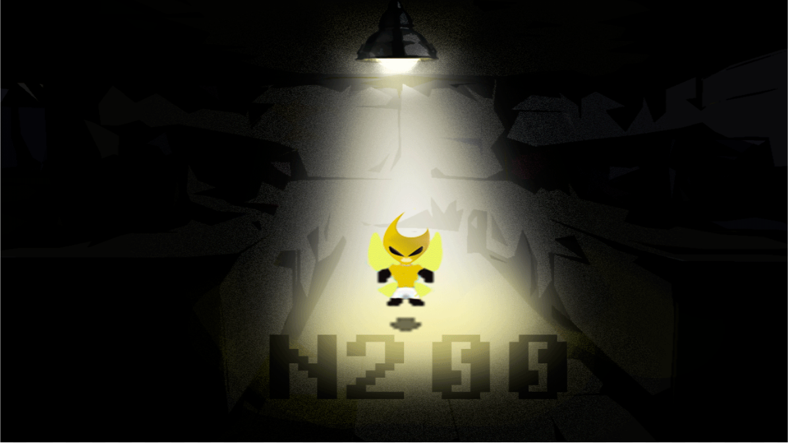
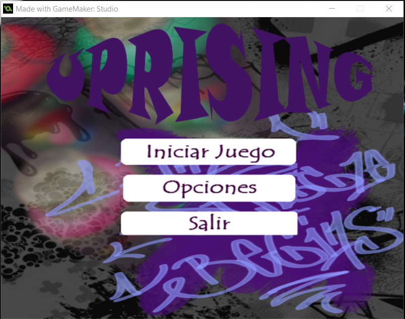

-
Sala Cyborg
Este trabajo fue desarrollado en Modulo de Interfaces Gráficas en un trabajo colaborativo entre Diseño Gráfico e Ingeniería en Diseño de Entretenimiento Digital.
El programa que se utilizó para este trabajo fue unity.
"CLICK AQUÍ PARA SABER MÁS"
-
Le Fabuleux Voyage d' JULES & SIMONE
Este trabajo fue desarrollado en Modulo de unterfaces Gráficas en un trabajo colaborativo entre Diseño Gráfico e Ingeniería en diseño de entretenimiento digital. Este trabajo se mostro como un prototipo de solución para una propuesta de la editorial de la UPB, quienes querían llegar a nuevos lectores. El programa que se utilizó para este trabajo fue unity.
"CLICK AQUÍ PARA VER MÁS"
-
Magic Wand
Este trabajo fue desarrollado en la clase de Programación orientada a objetos en Ingeniería en Diseño de Entretenimiento Digital. Para este proyecto se utilizo una serie de tutoriales Hagamos videojuegos con unity. y se le modifico el código de forma que cumpliera con los requisitos de la entrega. El programa que se utilizó para este trabajo fue unity. Este trabajo se realizó en colaboración con GameBite10
"CLICK AQUÍ PARA IR A PLAY STORE"
-
Experiencia Tunel de vórtice VR
Este trabajo fue desarrollado en la clase de Procesos congnitivos en ingenieria en diseño de entretenimiento digital. Para este proyecto se exploró por primera vez el mundo de la realidad virtual. Como referencia se tomó el tunel que hay en la sala mente del Parque Explora en la Ciudad de Medellín. La experiencia consiste en que pormedio deun tunel giratorio que produce la sensación de vértigo a las personas. El programa que se utilizó para este trabajo fue unity.
"CLICK AQUÍ PARA IR A PLAY STRORE"
-
 Flappy Experience
Este proyecto se realizó como parte un estimulante de aprendizaje sobre la plataforma Unity. Para este proyecto se utilizo una serie de tutoriales Hagamos videojuegos con unity. y se agregaron unas pequeñas modificaciones gráficas.
El programa que se utilizó para este trabajo fue UNITY.
"CLICK AQUÍ PARA IR A PLAY STORE"
-

N200 scape
Este trabajo fue desarrollado en la clase de Programación en ingenieria en diseño de entretenimiento digital. Este trabajo se realizó en colaboración con GameBite10
"CLICK AQUÍ PARA VER LA PRESENTACIÓN CON LA QUE ENTREGAMOS EL JUEGO"
"CLICK AQUÍ PARA IR A LA PÁGINA DE DESCARGA"
-

Uprissing
Este trabajo fue desarrollado en la clase de Taller II en ingenieria en diseño de entretenimiento digital. En este trabajo se realizó un juego en GameMaker Studio, para adquirir las primeras bases de programación y realización de juegos de PC.
"CLICK AQUÍ PARA VER EL PADLET DONDE SE ALMACENÓ TODA LA INVESTIGACIÓN Y PROCESO"
"CLICK AQUÍ PARA DESCARGAR EL INSTALADOR"
-
Jelou.io
Este trabajo fue desarrollado en la clase de Taller V en ingenieria en diseño de entretenimiento digital. En este proyecto lo que se trato fue de dar vida a un objeto inanimado "La ropa". Después de una muy grande reflexión nos dimos cuenta que podríamos hacer algo que lograra unir personas. La experiencia consiste en que pormedio de una app dos personas comienzan a responder preguntas y si tienen un numero de respuestas similares sus circulos de cercanía de van hacercando. Eeste programa se realizó directamente en la Web.
"CLICK AQUÍ PARA ABRIR"
-

Programas hechos en Matlab
Estos trabajos fueron desarrollados en la clase de Procesos Estocasticos en ingenieria en diseño de entretenimiento digital. En estos proyectos se hicieron unos trabajos en el que se hace una ruleta y una maquina tragamonedas para trabajar el uso de variables aleatorias discretas. El programa que se utilizó para este trabajo fue Matlab.
"CLICK AQUÍ PARA DESCARGAR"
{kind=link}
{kind=link}
{kind=link}
{kind=link}